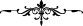

Erkeğin, hanımın mehrini tam ve eksiksiz olarak vermesi yâhut o niyette olması
gerekir. Kim, hanımının mehrini yemeye niyetlenirse, tıpkı ödememeyi baştan tasarlayıp
borç alan kişinin hırsız olması gibi kıyâmet günü zinâkâr olarak gelir. Erkek, hanımının
mehrini fakir olması, ya da hanımının kendi isteğiyle te’cil etmesi dışında geciktiremez.
Erkek hanımına farzları edâ edebilecek kadar tahâret, hayz, namaz ve diğer
hükümlerini öğretir. Ehl-i sünnet îtikâdını öğretir ve ehl-i bid’at îtikâdından geri çevirir.
Kendisi de bilmiyorsa, sormalı ve müftînin cevâbını hanımına nakletmelidir. Sormadığı
takdirde kadının bizzat kendisinin sormak için çıkması gerekir. Farzları öğrendikten
sonra artık kadının öğrenmeye yâhut zikir meclisine eşinin rızâsı olmadan gitmeye hakkı
yoktur. Erkek, herhangi bir dinî hükmü ihmâl eder, hanımı da bu sebeple onu edâ etmez,
erkek hanımını bilgilendirmez yâhut bilgilenmekten alıkorsa günaha ortak olurlar.
Hadiste “Kıyâmet günü insanların en şiddetli azap görecek olanı, hanımını bilgisiz
bırakandır”[240] diye vârid olmuştur. Yine Hz. Peygamber (a.s.); “Hepiniz çobansınız.
Hepiniz gözetiminiz altındakilerden mes’ulsünüz.”[241] buyurmuştur.
[234]. Müslim, Hacc 147
[235]. Buhârî, Salât 88, Edeb 38; Müslim, Birr 65; Tirmizî, Birr 18; Nesâî, Zekât 67;
Müsned, IV, 104, 405, 409
[236]. Müslim îmân 95
[237]. Buhârî, îmân 7; Müslim, îmân 71-72
[238]. Münâvî, III, 492
[239]. Münâvî, VI, 11; Aclûnî, II 379
[240]. Irâkî, Muğnî, II, 33
[241]. Buhârî, Cuma 11; Müslim, İmâre 20